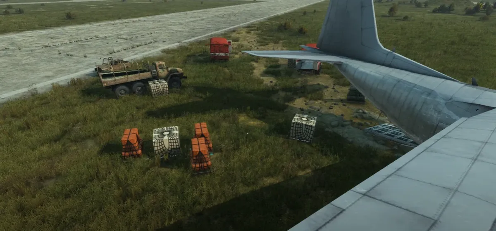
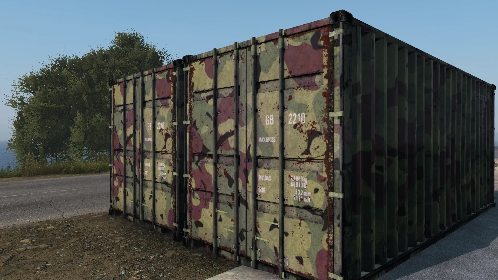
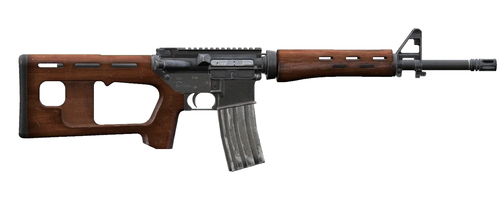
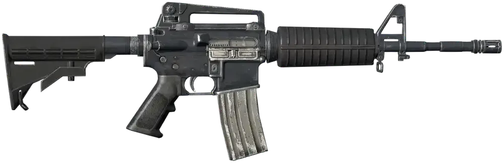

Dayz chernarus map was the very first map to be used on the izurvive app.
Izurvive is the very first thing that you should download directly after the
installing of the game itself. This map app is interactive and will help you
find anything from water, to food, weapons and sometimes even other players.
Have a plan already? Click on the
community server details at the top to get straight into the action, or continue reading to find out what this server is about.
Exploring the DayZ Standalone New Map


This DayZ standalone map will have harsh conditions and operate year-round.
NWAF is where the action will be on most Chernarus maps. To make Chernarus a
single playable town, we will be making NWAF even more dangerous by placing all
the food there. To prepare us all for the DayZ desert map that is coming before
January, we will also have the heat turned up in the summertime.
Dayz Standalone Map Size & Scale


The first map to ever come out as a mod was the famous Chernarus map. It was one of a kind for its time,
having a massive reach and size of 225 square kilometers. This makes sprinting from one side of the map to
the other take about 60 to 90 minutes. That is, if you ran it straight without food or water stops. With
10km of forests, 50km of towns and villages, and a whopping 350km of roads, it is no wonder why people are
sometimes so hard to find. It features an expansive amount of towns and, most importantly, more than three
military hot zones. This map makes anyone disappear.